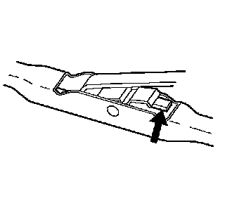
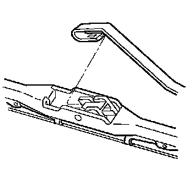
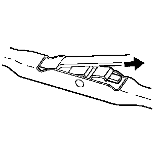

Rear Window Wiper Blade Replacement
Rear Window Wiper Blade Replacement
Remove Procedure

1. Push in the button of the wiper blade clip and remove the wiper blade from the inside radius of the wiper arm.

2. Bring the hook of the wiper arm out through the opening in the wiper blade.
Installation Procedure
1. Insert the hook of the wiper arm through the opening in the wiper blade.

2. Position the wiper blade pivot in the inside radius of the wiper arm hook.
3. Pull the wiper blade pivot into the wiper arm hook until the pivot locks into the hook.
4. Operate the wipers and check for proper operation.